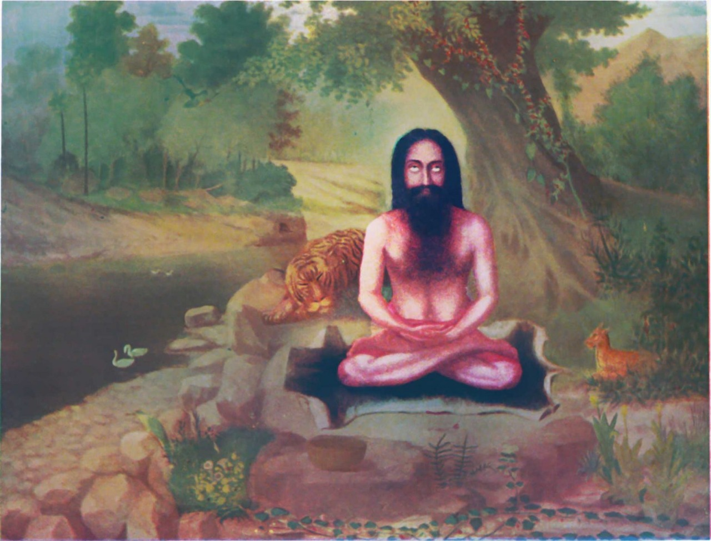
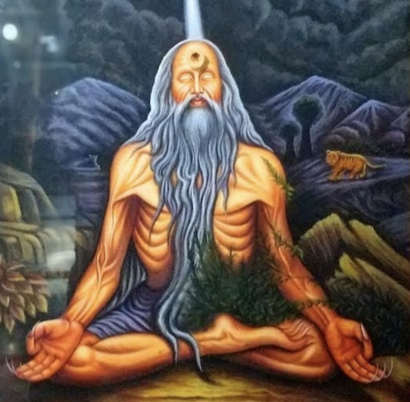

Samkhya or Sankhya (/ˈsɑːŋkjə/; Sanskrit: सांख्य, romanized: sāṃkhya) is an orthodox school of Hindu philosophy characterized by a dualistic view of reality. It proposes that existence is founded upon two distinct principles: Puruṣa, which represents pure consciousness, and Prakṛti, which encompasses nature or matter, including the mind and emotions.
Puruṣa is described as the pure, unchanging, and independent consciousness—beyond perception, free from sensory experience, and not definable through words. In contrast, Prakṛti is understood as inert, unconscious matter, composed of three fundamental qualities (guṇas): sattva (balance), rajas (activity), and tamas (inertia). The interaction between Puruṣa and Prakṛti disturbs this balance, leading Prakṛti to manifest as the twenty-three tattvas (principles), which include intellect, ego, mind, sensory and action faculties, and the elements that form the material universe.
A living being (Jiva) in Samkhya is defined as the state where Puruṣa is entangled with Prakṛti. Human experience is viewed as a result of Puruṣa's awareness of various cognitive processes. Liberation (Moksha) or isolation (Kaivalya) is achieved when Puruṣa is freed from its association with Prakṛti.
Samkhya's theory of knowledge accepts three of the six pramaṇas (means of knowledge) recognized in Indian philosophy: direct perception (pratyakṣa), inference (anumāṇa), and reliable testimony (śabda). It is often regarded as a rationalist school due to its reliance on logical reasoning.
Although Samkhya concepts can be traced back to ancient texts like the Rig Veda and early Upanishads, some scholars suggest that the philosophy may have non-Vedic origins, developing in ascetic traditions around the 8th or 7th century BCE. By the time of the Samkhyakarika (circa 4th century CE), Samkhya had reached a systematic form.
Samkhya's theism is a subject of debate. While its classical formulation is generally non-theistic, earlier versions may have been open to theistic interpretations. Regardless, it is deeply connected to the Yoga school of Hindu philosophy, where it serves as the foundational metaphysical framework.

Yoga, one of the six major schools of Hindu philosophy, is closely related to Samkhya but distinguishes itself by introducing the concept of Ishvara, a personal but passive deity. Although Yoga is often viewed as a separate school of thought in later texts, it is fundamentally rooted in Samkhya's dualistic metaphysics, where reality is defined by the interplay of Puruṣa and Prakṛti.
Yoga's ethical foundation is built upon principles like Yamas (restraints) and Niyama (observances), and it also incorporates the Samkhya theory of guṇas. Its epistemology, similar to Samkhya, is based on three pramaṇas: perception, inference, and reliable testimony.
Yoga's primary text is the Yoga Sutras of Patanjali, which systematizes its philosophical and practical teachings. In this tradition, liberation (moksha) is achieved through self-discipline, knowledge, and direct insight, leading to the separation of Puruṣa from Prakṛti.
While Samkhya remains primarily a rational, non-theistic philosophy, Yoga integrates the concept of Ishvara, offering a pathway that accommodates personal devotion alongside meditative and ethical practices.